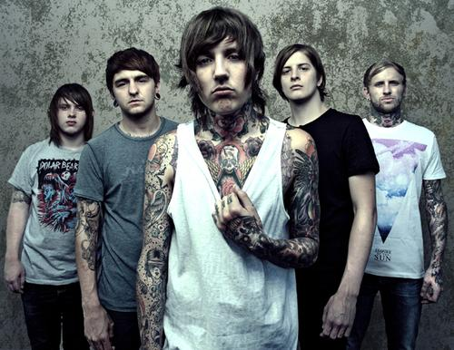

Historia de BMTH
Comienzo,demos y primer EP(2002-2006)
os miembros fundadores de Bring Me the Horizon provenían de diversos orígenes musicales dentro del metal y el rock. Matt Nicholls y Oliver Sykes tenían un interés común en el metalcore estadounidense como Norma Jean y Skycamefalling, y solían asistir a espectáculos locales de punk hardcore. Más tarde conocieron a Lee Malia, quien habló con ellos sobre bandas de thrash metal y death metal melódico como Metallica y At the Gates; Malia también había formado parte de una banda tributo a Metallica antes de conocer al dúo.Bring Me the Horizon se formó oficialmente en marzo de 2004, cuando los miembros tenían entre 15 y 17 años. Curtis Ward, que también vivía en el área de Rotherham, se unió como guitarrista, Sykes como vocalista, Malia en la guitarra principal y Nicholls en la batería. El bajista Matt Kean, que estaba en otras bandas locales, completó la formación. Su nombre fue tomado de la línea de la película Piratas del Caribe La Maldición de la Perla Negra, donde el Capitán Jack Sparrow dice "Ahora, tráeme ese horizonte". La banda tocó su primer show en vivo el 15 de abril de 2004, en The Charter Arms en Rotherham, Inglaterra.
Miembros:
- Oliver Sykes - voz principal
- Matt kean - bajo
- Lee Malia - guitarra lider
- Matt Nicholls - bateria